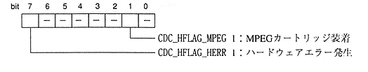

Title | Data | Data Name | No |
Access macro | type | Description |
|---|---|---|
CDC_STAT_STATUS (stat) | Uint8 | Status (status code Etc.) |
CDC_STAT_FLGREP (stat) | Uint8 | CD report CD Flag and repeat count |
CDC_STAT_CTLADR (stat) | Uint8 | CD report CONTROL / ADR byte |
CDC_STAT_TNO (stat) | Uint8 | CD report track Number (binary value) |
CDC_STAT_IDX (stat) | Uint8 | CD report index Number (binary value) |
CDC_STAT_FAD (stat) | Uint32 | CD report frame Address |
macro name | description |
|---|---|
CDC_GET_STC (stat) | Get status code from CD status information |
CDC_GET_REPEAT (stat) | Get repeat count from CD status information |
Title | Data | Data Name | No |
access macro | type | Description |
|---|---|---|
CDC_HW_HFLAG (hw) | Uint8 | hardware flag |
CDC_HW_VER (hw) | Uint8 | CD block version Information |
CDC_HW_MPVER (hw) | Uint8 | MPEG version information |
CDC_HW_DRV (hw) | Uint8 | CD drive information |
CDC_HW_REV (hw) | Uint8 | CD block revision Information |
